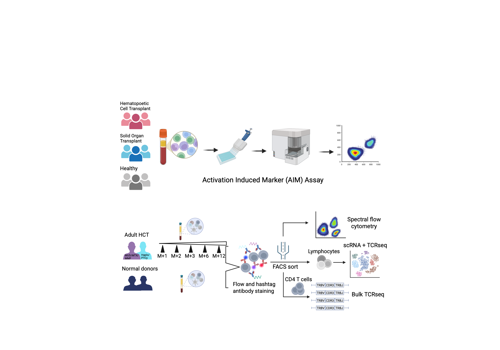
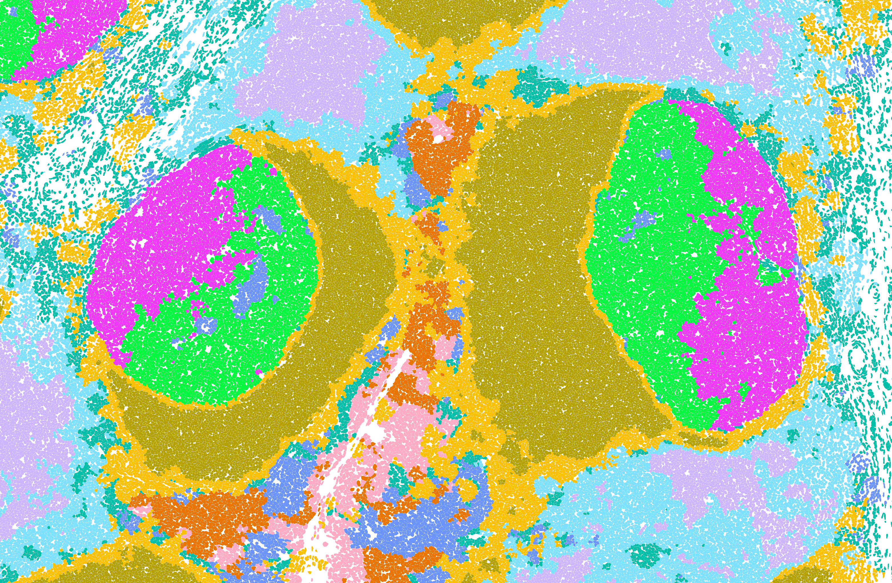
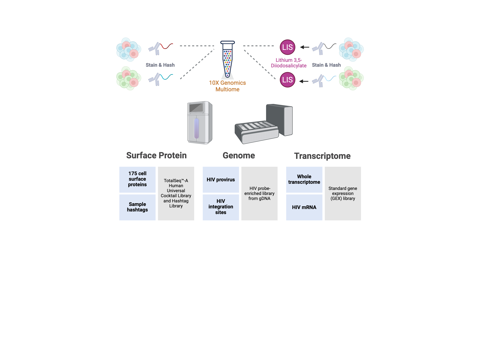

Immune Reconstitution and Vaccine Readiness After Transplantation
Immune recovery, re-vaccination, and infection risk after HCT
Mission Trajectory
The Vella Lab seeks to advance human immune health through clinical and translational immunology. Our work focuses on understanding human CD4+ T cell states and CD4+ T follicular helper (Tfh) biology to advance basic understanding of human immunity and to directly change the ways in which we can measure and modulate human T-B interactions.
Working directly with clinical cohorts, we investigate how T cell programs are established, dysregulated, or reconstituted in vaccination, infection, and inflammatory diseases. We also study the mechanisms regulating Tfh differentiation and germinal center biology, applying the discoveries to understand T-B cell interaction across clinical contexts.
Our approaches require innovative single-cell technologies and computational analyses. In addition to studying the host cell, we also study viral integration events in those cells, applied to the fields of HIV reservoir and lentiviral-modified cellular therapies. In these approaches we aim to link viral or therapeutic gene integration with cellular phenotype to uncover mechanisms of HIV persistence, determinants of CAR-T cell function, and the effects of gene-editing on immune cell recovery in genetic diseases.
By integrating clinical research, human immunology, and technological innovation, our mission is to advance precision immunology to uncover the cellular mechanisms that shape protective immunity and inform next-generation immune therapies.

Immune Reconstitution and Vaccine Readiness After Transplantation
Immune recovery, re-vaccination, and infection risk after HCT

Applied Germinal Center Biology
Define mechanisms of Tfh regulation and GC biology

HIV Reservoir, Single Cell Innovations, and Cell Therapy
SCRIPT-seq, reservoir biology, and CAR-T integration
March 2026
🎙️ Sam attends the Keystone Symposium on B and T Cell Collaboration in Lymphoid and Nonlymphoid Microenvironments, with the NIAID-funded Keystone Symposia Scholarship.
🍺 Sam is awarded the Mary Ellis Bell Prize for his paper.
February 2026
📝 Leena submits her paper — congratulations!
🎙️ Yi attends CROI 2026 and receives the New Investigator Scholarship.
January 2026
🌎 We welcome Davi Nunes as the lab’s third Researcher of the Future.
🔬 We welcome our newest IGG rotation student, Kaila Powell.
December 2025
🎙️ Kingsley, Leena, and Ben attend the 2025 ASH Annual Meeting.
📝 Sam submits his paper — congratulations!
September 2025
💍 We celebrate our second lab wedding — congratulations to Sam & Lydia!
📌 Nosa presents a poster at the Fall Research Expo.
July 2025
🌟 Hunter Courtney completes his time in the lab and heads to the MSTP program at UCLA and Caltech.
June 2025
👶 Kingsley becomes a new dad — our first lab baby!
🎤 The team attends and presents at the CHOP I2DRI Scientific Symposium.
May 2025
🥂 Katie passes her preliminary exam.
January 2025
🌍 We welcome Brazilian student Aisha Zhogbi as our second Researcher of the Future.
November 2024
🎊 After a successful rotation, Katie Premo officially joins the team.
October 2024
🍁 Penn FERBS member Nosamudiana Omoigui joins the lab.
September 2024
💍 We celebrate our first lab wedding — congratulations to Kingsley & Shavonda!
🙌 Monica Manglani, a Rheumatology fellow at CHOP, joins the lab.
👩🔬 Molly moves on to become a Medical Lab Scientist within CHOPs department of Pathology and Laboratory Medicine.
July 2024
🌟 Ben Philipson, a CHOP Hematology/Oncology fellow, joins the Vella Lab.
June 2024
🏫 We welcome Atoishy Dayve, our first undergraduate volunteer from Drexel University.
March 2024
📝 Kingsley submits a paper to The Journal of Infectious Diseases.
January 2024
🌎 The lab participates in the inaugural CHOP Researchers of the Future program, welcoming Carol Ferraz from Brazil.
November 2023
🩺 MSTP (IGG) student Sam Barnett Dubensky joins the Vella Lab, co-mentored by Derek Oldridge.
September 2023
🍂 IGG students Oishi Bardhan and Katie Premo start their rotations in the lab.
August 2023
💻 Tianyu Lu joins as the lab’s first bioinformatician.
🚀 Our very first employee, Shane Kammerman, moves to Massachusetts to join Candel Therapeutics.
June 2023
🧪 Yi Qi joins the Vella Lab from Penn Bioengineering.
May 2023
🍾 Nina de Luna and Leena Babiker both pass their preliminary exams.
💫 Josef Novacek departs the lab to pursue studies in patent law.
February 2023
🇩🇪 We welcome Emilia Schlaak from Germany, the lab’s first international volunteer student.
January 2023
🌱 IGG student Nicolai Apenes rotates in the lab.
September 2022
🧬 Research Technician and single-cell expert Molly Gallagher joins the lab.
May 2022
🔍 Austin Kriews becomes the first BBCB graduate student to rotate in the lab.
December 2021
🎉 Hunter Courtney becomes the first Penn undergraduate to volunteer in the lab.
October 2021
✨ For the first time, two IGG students rotate in the lab at once: Nina de Luna and Leena Babiker.
September 2021
📦 The lab relocates from UPenn’s BRB II/III to the new 10th floor of CHOP CTRB.
😎 We welcome our first postdoctoral fellow, Kingsley Kumashie.
August 2021
🌟 Josef Novacek joins the lab as our third employee.
June 2021
🙌 We welcome our second team member and lab manager, Jonny Tedesco.
January 2021
🔬 Julia Eberhard becomes the first IGG graduate student to rotate in the lab.
July 2020
1️⃣ The Vella Lab officially begins virtually (COVID 😅), and we welcome our very first team member, Shane Kammerman.